Fubar

Fubar sin logo
"Fu bar" er en student bar for Westerdals Oslo ACT i teknologi divisjonen og det naturlige vannhullet for enhver student i området, på grunn av sine lave priser på øl! Mest sannsynlig den billigste ølen du kan kjøpe på en bar i Oslo. Fu bar arrangerer også arrangement som "Oktoberfest" og "Halloween party". Det finnes også et par konkurranser som quiz og beerpong. Fu bar er stedet å være!
close
Lawo
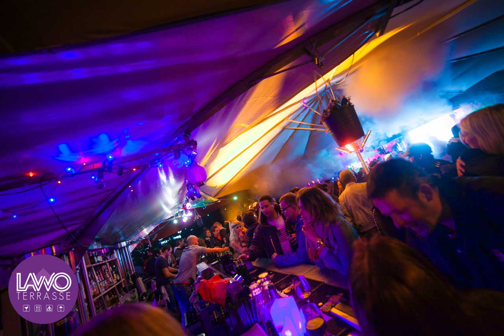
Dette er Lawo
Lawo er en populær pub i Oslo som er åpent på tirsdager, fredager og lørdager. Lawo ble åpnet i april 2012 og i 2013 Lawo åpnet en bar utenfor for studenter. Du kan leie Lawo hvis du er interessert i å ha en fest eller et Julebord
close
Jonhs bar
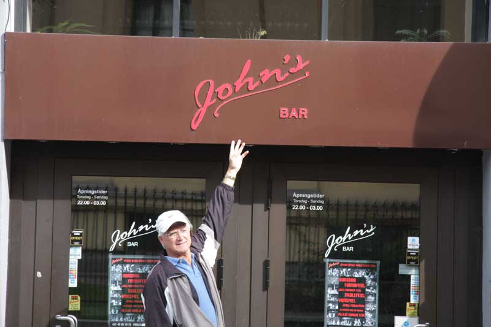
velkommen til John`s bar
John`s bar er en av de mest populære barene i oslo. Sette er stedet for unge til å være, 20 års aldersgrense alle dager utenom torsdagen da det er 18. Et sted å møte venner for en drink eller kanskje fem! De er Norge mest populære afterski bar, uten skibakke i nærheten. Med John`s, det er alltid god musikk. De spiller alt fra 80-talls musikk til Rock 'n Roll.
close
Slottsparken
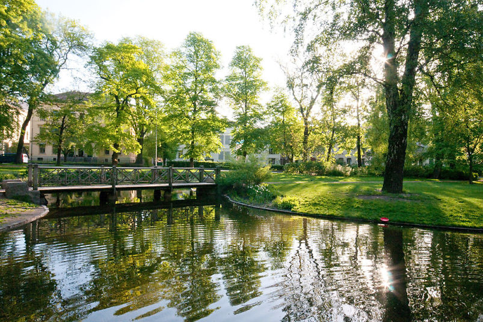
Dammen Kongespeilet ligger i Dronningparken som er en del av Slottsparken bak Slottet.
Slottsparken er Oslo sin sentrale bypark. Parken ligger rundt det kongelige slott og slottsplassen. Parken består av store plener under høye trær, gangveier, alléer og anlagte vannspeil. Slottsparken er et vernet kulturminne, og forvaltes av Slottets gartnere. En del av parken som kalles Dronningparken og er et område som ble etablert som park allerede i 1751.
close
Frognerparken
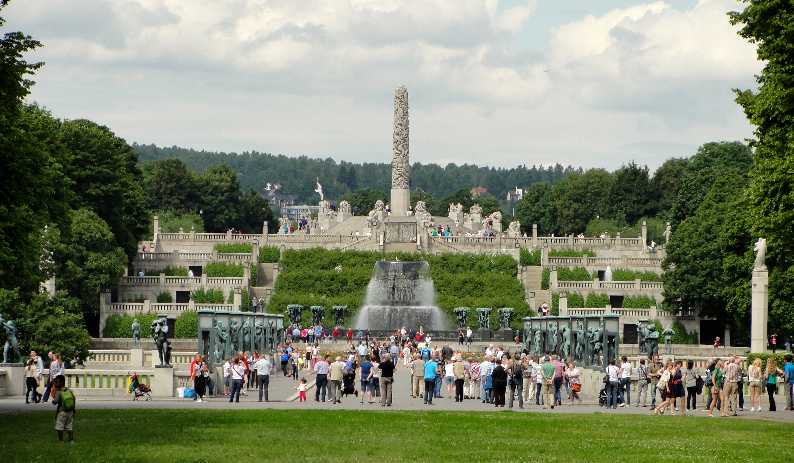
Bildet er av frognerparken
Addresse: Kirkeveien, 0268 Oslo
Største parken i Oslos sentrale byområde, som gjør det til en av de største og kjente attraskjonene. Du finner blant annet Norges største rosesamling her, som tilsvarer 14 000 planter fordelt på 150 ulike arter. Men det som skiller seg mest ut og gjør det til en så populær attraksjon er pga vigelandsparken. Dette er en av Norges og oslos mest besøkte attraksjoner, med rundt 1 million besøkende hvert år. Parken består av mange statuer og skulpturer, over 200. Noen av de som er verdt å nevne er, sinnataggen, monolitten og livshjulet.
close
Akershus Festning
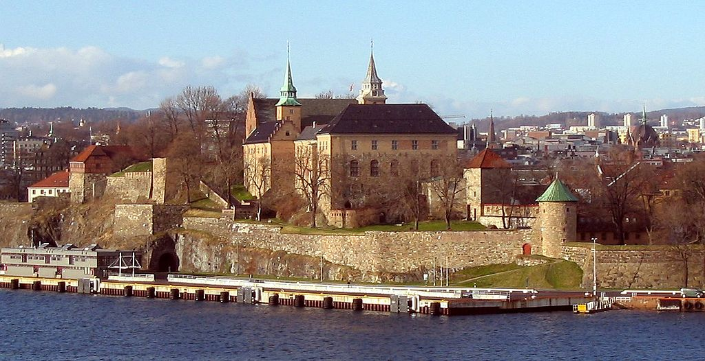
Akerhus festning sett fra Oslofjorden.
Adresse: 0103 OSLO. Akerhus festning er en av de viktigste festningene i Norges historie, og er i dag sett på som et nasjonal symbol. Akerhus festning ble bygget som en midelaldersk kongeborg i 1299. På 1600-tallet ble den bygget om til et renessanseslott omgitt av en bastionfestning. Borgen, som senere ble Akershus festning, ble et avgjørende forsvarsverk for Norge gjennom flere epoker. I over fire hundre år motstod den beleiringer og angrep på landets styre.
close
Slottet
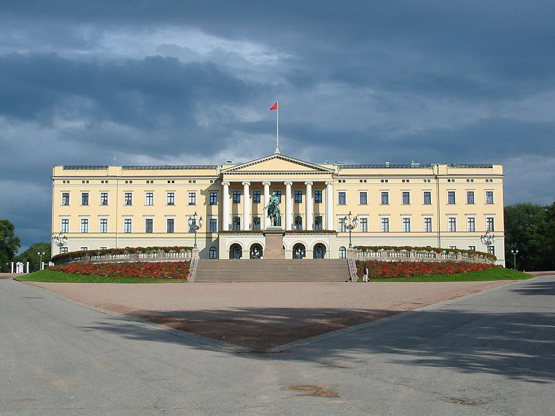
Hver nasjonaldag siden 17. mai 1906 har den norske kongefamilien stått på slottsbalkongen og hilst osloskolenes elever i barnetoget som marsjerer over Slottsplassen.
Adresse: Slottsplassen 1, 0010 Oslo. Det kongelige slott i Oslo er der den norske kongefamilien bor. Slottsparken omgir palasset på alle sider og funksjoner grasområder, majestetiske trær, små dammer og statuer. Deler av slottet er åpent for publikum i sommermånedene. Fra øst løper paradegaten Karl Johans gate rett mot Slottets hovedfasade og er den formelle adkomst til Slottet ved høytidelige anledninger.
close
Munch Museet
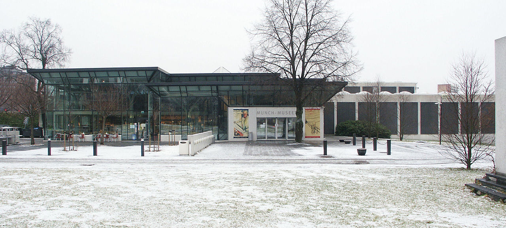
Munchmuseet på Tøyen i Oslo. Arkitekt Einar Myklebust og Gunnar Fougner.
Adresse: Tøyengata 53, 0578 Oslo. Munchmuseet er et kunstmuseum i Oslo som inneholder Edvard Munchs etterlatte arbeider som han testamenterte til Oslo kommune i 1940. Museet åpnet dørene for publikum i 1963, hundre år etter maleren og grafikerens fødsel. Bildet finnes i fire originalversjoner, hvorav to tilhører Munch-museet, ett Nasjonalgalleriet har og det siste ble auksjonert bort til en ukjent kjøper i 2012. “Skrik” er et av Edvard Munchs mest berømte bilder, og en av Norges sentrale kunstskatter.
close
Aker Kirke
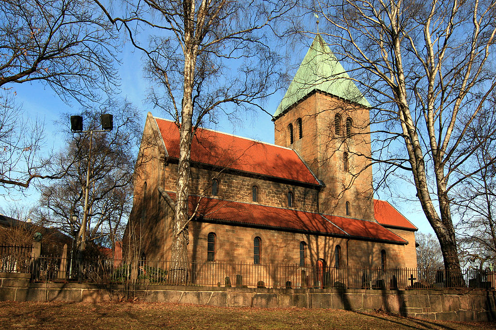
Den har adresse Akersbakken 26 og ligger ved Telthusbakken, for enden av Akersveien, og er i dag sognekirke for Gamle Aker menighet.
Gamle Aker kirke er den eldste byggningen i Oslo. Aker kirke er nevnt i 1080 som fylkeskirke for Vingulmark. Oslo Byleksikon mener at dette er dagens kirke, og at den kan være bygd av kong Olav Kyrre. Andre kilder daterer kirken til første del av 1100-tallet. Stilhistoriske kriterier tilsier at dagens Gamle Aker kirke ble påbegynt tidligst på begynnelsen av 1100-tallet. Kirken det vises til i 1080 var etter alt å dømme en trekirke som sto på stedet før dagens kirke ble reist.
close
Nobels Fredssenter
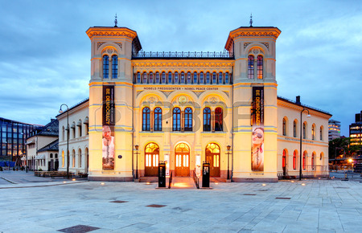
Senteret er plassert på Rådhusplassen i Oslo, i hovedbygningen for den gamle Vestbanestasjonen.
Adresse: Brynjulf Bulls plass 1, 0250 Oslo. Nobels Fredssenter er museet om Nobels fredspris. De faste utstillingene forteller historien om Alfred Nobel og om fredsprisvinnerne og deres engasjerende og banebrytende arbeid. Nobels Fredssenter sine skiftende utstillinger gir innsikt i aktuelle temaer knyttet til krig, fred og konfliktløsning, ofte presentert på nye og overraskende måter. Gjennom utstillinger, omvisninger, arrangementer og familieaktiviteter er de et sted for refleksjon, debatt og engasjement.
close
Akerselva
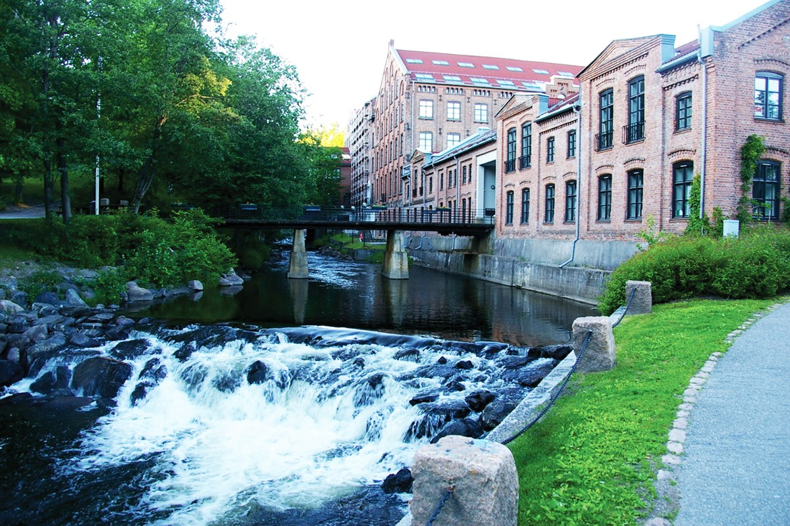
Akerselva har i senere tid blitt en attraksjon hvor man kan gå og se den vakre elva. Man kan oppleve norsk natur midt i Oslo.
Akerselva er en kjent elv som renner gjennom Oslo. Elva er 8,2 km lang og har et fall på 149 meter. Akerselva har hatt en rik flora og vært en lakseelv, men i 2011 var det et klor utslipp som drepte nesten alt livet i elva.
close
Stortinget
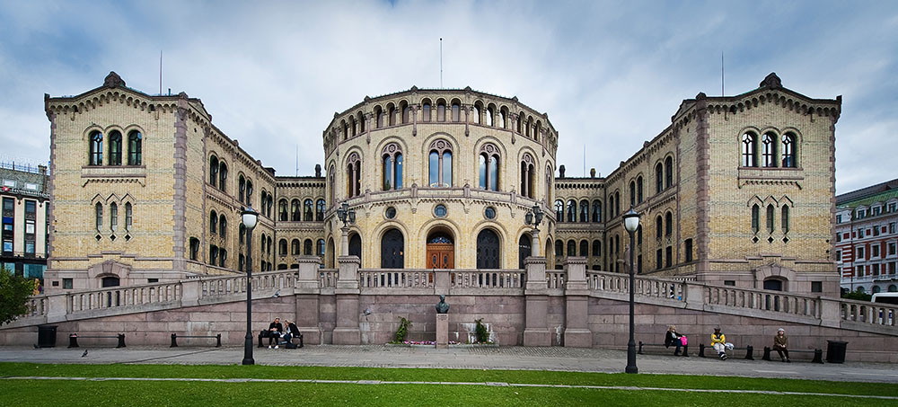
Bildet er av Stortinget
Addresse: Stortinget, 0026 Oslo - Er Norges nasjonalforsamling . Selve byggningen sto ferdigstilt og åpnet i år 1866, og er idag en av de mest karakteristiske bygningene i landet, som symboliserer uavhengighet og frihet.Etter mye frem og tilbake om hvem skulle stå bak konstruksjonen av stortingsbygningen ble det i år 1856 vedtatt at teningene til den svenske arkitekten Emil Victor Langlet som skulle få æren.
close
Operahuset

Bildet er av Operahuset
Addresse: Den Norske Opera og Ballett Kirsten Flagstads pl. 1 N-0150 Oslo
Operahuset er sentralisert og ligger i Bjørvika og ble åpnet i 2008 og er tegnet av arkitet firmamet snøhetta, som blant annet ble kåret og vant prisen "Verdens kulturbygg" for operahuset på World Architecture Festival. Operahuset har tre scener der en av senene har den største lysekronen i Norge. Dette er er Norges største musikk-og scenekunstinstitusjon og i tillegg er det verdt å nevne at dette er det første operahuset i verden hvor man kan gå på taket. Med ca 1 million besøkende mennesker årlig, gjør dette til en av Oslos mest besøkte turistmål
close
Nationaltheatret
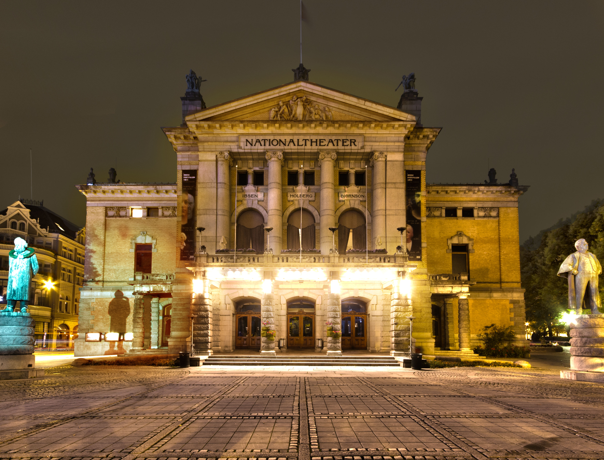
Bildet er av Nationaltheatret
Addresse: Johanne Dybwads plass 1, 0161 Oslo - I over 100 år har dette vært landets hovedscene og ble åpnet 1 september 1899. Dette er et arena for teaterstykker, storslåtte markeringer og masse annet tradisjonelt og nyskapende. Etter løsrivelesen fra Sverige startet Norge med nasjonalbygging, og selvsalgt hadde Nordmenn et ønske om å ha noe norsk innen teater for dramatikerer og scenekunstere. Henrik bull var arkitekten bak nationaltheatret, vi finner både Bjørnson og Ibsen’s skulputer utenfor nationaltheatret for å vise at dette var noe norsk og vi her til lands kan være stolte av.
close
Karl Johan
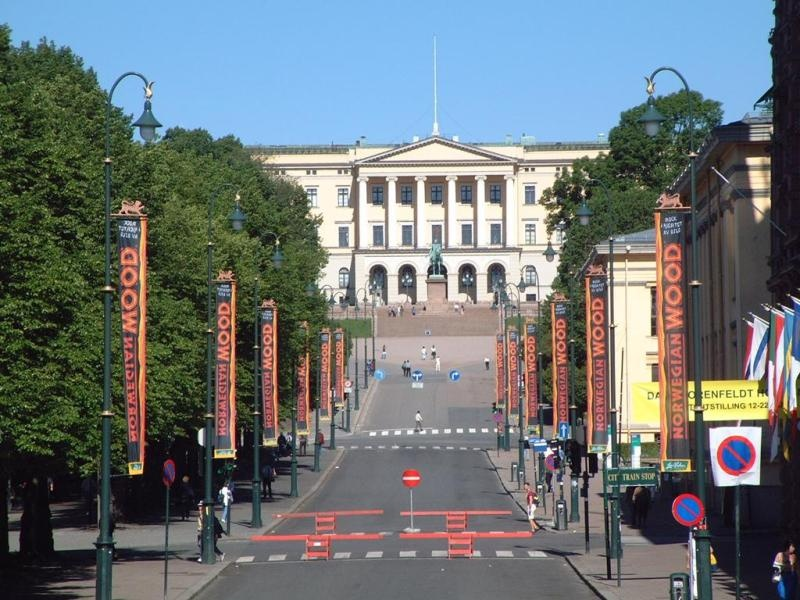
Bildet er av Karl Johan
Man kan både si at dette er Oslos mest kjente gate, eller med andre ord Oslos hovedgate. Selve gata Karl Johan er oppkalt etter kongen i sverige, som var også konge i Norge fra 1818 til sin død i 1844 og foran slottet står hans statue den dag idag. Gaten er nå gågate, man treffer på mange kjente intustitusjoner som blanet annet slottet og nationaltheatret
close
Colosseum Kino
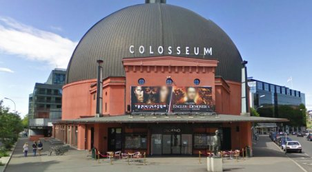
Colosseum er tegnet av arkitektene Jacob Hanssen og Gerhard Iversen og sto ferdig i 1928.
Adresse: Fridtjof Nansens vei 6, 0369 Oslo. Colosseum kino er Oslo Kinos største kino. Kinoen ligger på Majorstuen i Oslo og har fire saler i ulike størrelser hvorav den største, Colosseums sal 1, har 978 sitteplasser. Colosseums sal 1 har siden den ble sertifisert i 1998 vært verdens største THX-sertifiserte kinosal. Colosseum 1 har et lerret på 10×22 meter, og salen har siden juli 2009 kunnet vise digital 3D ved bruk av RealD.
close
Saga Kino
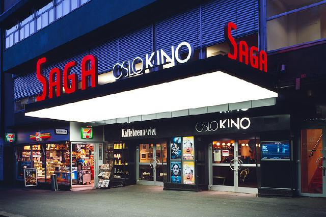
I 1981 ble Saga ombygget til kinosenter med 6 saler.
Adresse: Stortingsgata 28, Oslo. Oslo Kino er Norges største kinovirksomhet og driver syv kinoer i Oslo: Colosseum, Gimle, Klingenberg, Ringen, Saga, Symra og Victoria (som tidligere het Vika). Kinoen ble åpnet 15. februar 1934. Den var tegnet av arkitektene Gudolf Blakstad og Herman Munthe-Kaas. Den hadde da én sal med parkett, galleri og losjer med til sammen 1345 plasser.
close
Klingenberg Kino
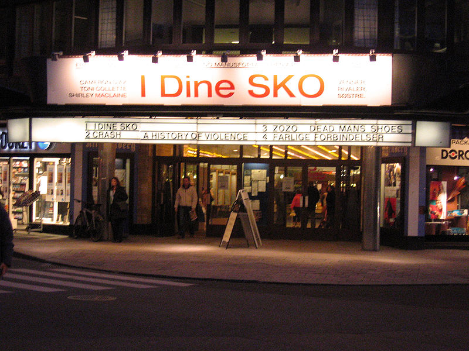
I 1995 ble inngangspartiet, publikumsarealene og hovedsalen fredet av Riksantikvaren.
Adresse: Olav Vs gate 4, 0161 Oslo. Klingenberg kino er en kino i Vika i Oslo sentrum, ikke langt fra Nationaltheatret. Klingenberg kino ble bygget på tomten til Cirkus Verdensteater som ble revet i 1935. Kinoen åpnet 6. oktober 1938. Klingenberg har gjennomgått en rekke ombygginger, der seteantallet stadig har blitt redusert for å øke komforten og avstanden mellom seteradene.
close
Peppes Pizza
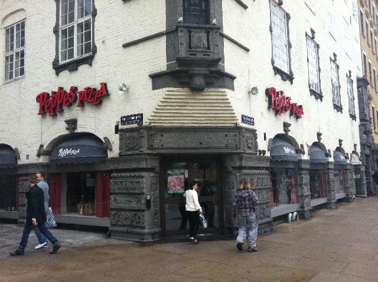
Peppes Pizza ved Karl Johans gate
Peppes Pizza Karl Johan ligger rett ved Jernbanetorget, i starten av Karl Johan. Atmosfæren er barnevennlig og uformell, og restauranten tilbyr take away. Peppes Pizza er en av de største pizzakjedene i Skandinavia, og er en amerikansinspirert restaurant med hovedsaklig pizza på menyen, men også burgere, salater og lasagne. Åpningstidene er 11:00-22:30 på mandager, 11:00-23:30 fra tirsdag til lørdag og fra 13:00-22:30 på søndager. Restauranten tilbyr gratis wi-fi til sine kunder, og har uteservering. Det er også en barneborg på restauranten, noe som er ypperlig for barnefamilier.
close
TGI Fridays
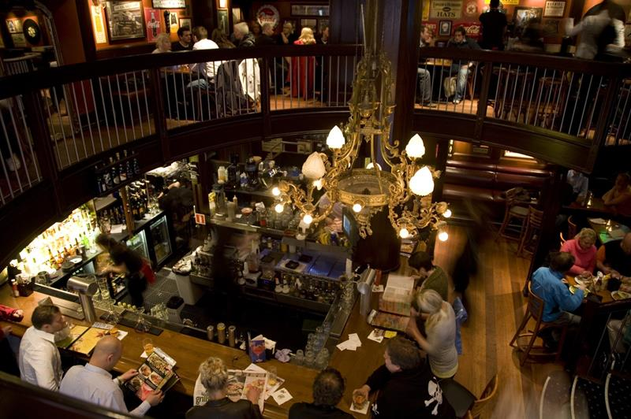
I dag finnes over 950 TGI Fridays i over 60 land verden over.
TGI Fridays er bygget på arven om god mat i rike porsjoner, innovative drinker og fantastisk stemning har Fridays blitt et favorittsted for sosiale mennesker som ønsker nyte en uformell restaurantopplevelse. Sjonglering, spinning og triksing med flasker, populært kalt flair’ing, er blitt kjent gjennom dyktige Fridays bartendere. Fridays setter kundeservice veldig høyt og gjør det beste for at du skal ha en hyggelig opplevelse.
close
Grand Cafe
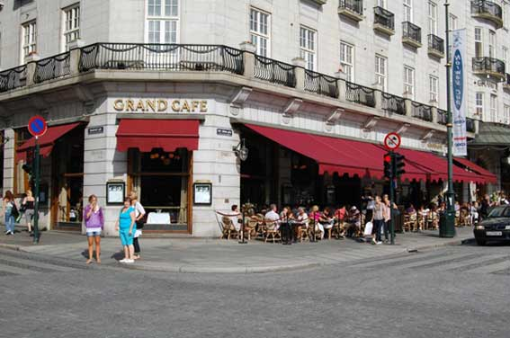
Uteservering på Karl Johans gate i sommersesongen.
Adresse: Karl Johans gate 31, 0159 Oslo. Kjent kafé i første etasje på Grand Hotel ved Oslos hovedgate, Karl Johan. Grand Café er gjennomsyret av tradisjon og en av byens store stamsteder helt siden Henrik Ibsen og Edvard Munch. Ibsen selv spiste her daglig. I dag, Grand Café er en frokostrestaurant, en hektisk og populært lunsjsted, og en middag restaurant med en utmerket á la carte meny. En klassisk lunsjbuffet av åpne smørbrød og kaker serveres hver dag. På kveldene kan gjestene velge blant et herlig utvalg av internasjonale og regionale retter.
close
Villa Paradiso
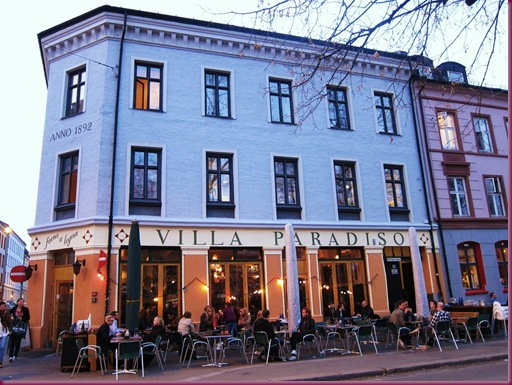
Adresse: Olaf Ryes plass 8, 0552 Oslo. Ti år etter at Jan Vardøen åpnet dørene på Olaf Ryes plass, er hans italienske pizzeria like populær. Koselig Villa Paradiso er kjent for ekte italiensk pizza, laget med importerte italienske råvarer på samme måte som i Napoli, der det hele startet. Italiensk frokost serveres på 08:00 - 16:00 på hverdager og 10:00 - 16:00 i helgene. De har også barnemeny med et bredt utvalg av pizza.
close
Theater Cafeen
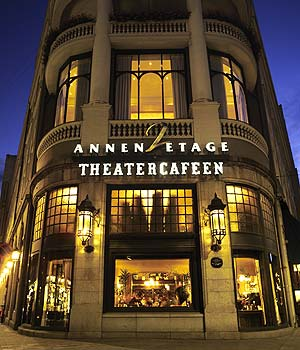
Cafeteatret er et vakkert bygg fra 1895, opprinnelig en metodistkirke som ble bygd med svært god akustikk og vakkert interiør i nyrenessansestil. Cafeteatret eies og drives av Nordic Black Theatre som frem til 2010 hadde sitt hjem på teaterbåten MS Innvik og på Parkteatret på Grünerløkka frem til 2001. Cafeteatret er en fin kafe og har et fint lokale! I tillegg til god mat har de teater, konserter, familie arrangementer og utleie av lokalet. Tirsdag til fredag fra kl.14.00 til kl.23.00.
close
Karl Johan
Oslo`s gater
Karl Johan regnes som Oslo hovedgate som strekker seg fra Jernbanetorget til Slottet. Det er en gågate med en rekke med trendy butikker og eksotiske resturanter. Langs gaten går man forbi Domkirken, Stortinget, Nationalteateret, Universitetsbygningene til man kommer helt frem til Slottet.
close
Bogstadveien

Oslo`s gater
Bogstaveien er en travel handelsgate som befinner seg på Majorstuen, ikke så langt unna t-banestajonen. I likehet med Karl Johan, finner du mange butikker og cafeer i området, og er et flott sted å få med seg om man ønsker å oppdage fin arkitektur, store parker og flotte omgivelser.
close
Thorvald Meyersgate
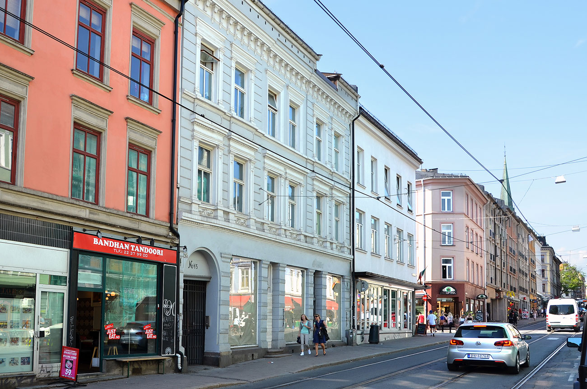
Oslo`s gater
Thorvald Meyersgata ern en 1.4 km lang og stekker seg lags Grunerløkka, opp til Sagene. Grunerløkka som før ble sett som slummen, er i dag de mest trendye og urbane bydelene i Oslo. Langs denne gata finner du utallige barer, resturanter, konsertlokaler og gallerier, og er et kjent sted å være på kveldene for å ta en pils.
close
Oslo City
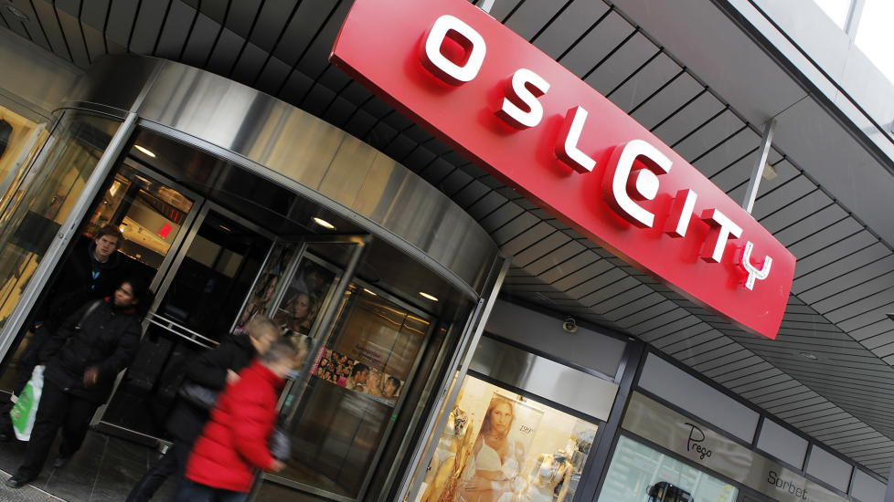
Oslo kjøpesenter
Oslo City er en av Oslos største kjøpesentre, og befinner seg i hjertet av Oslo. De kan by på hele 93 butikker på 5 etasjer. Alt fra klær og sko, elektronikk og restauranter!
close
Byporten

Oslo kjøpesenter
I Byporten har du en rekke butikker og resturanter som du ikke finner på andre kjøpesentre. De fleste butikkene som befinner seg her er de første som ble etablert i Norge! Dette er et sentralt møtested, hvor bygget deler vegger med Oslo S og Oslo City, og Scandic Hotell i øvre etasje!
close
Grand Hotel
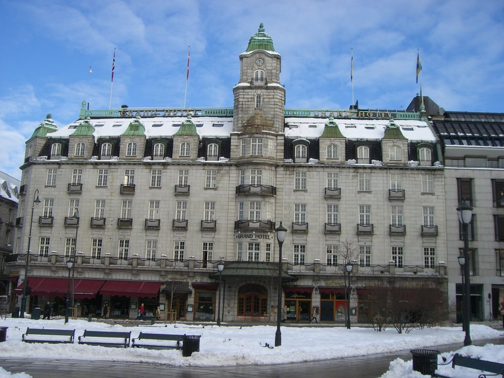
Bide av Grand Hotel
Addresse: Karl Johans gate 31, 0159 Oslo - Grand Hotel. Ble åpnet i 1874 og grunnlegeren og utvikeleren er Julius Fritzner. Grand hotellet er bestående av 290 rom hvor av 52 er stuier. Karakteristekene og arkitekten på er en blanding av tidløst klassiske trekk, som både gir et innblikk i gamle dager og holder nivået oppe blant dagens moderne hoteller, som derfor gjør Grand hotel til hovestdatens mest æreverdige og deluxhotell, og kanskje landets også.
close
Oslo Plaza
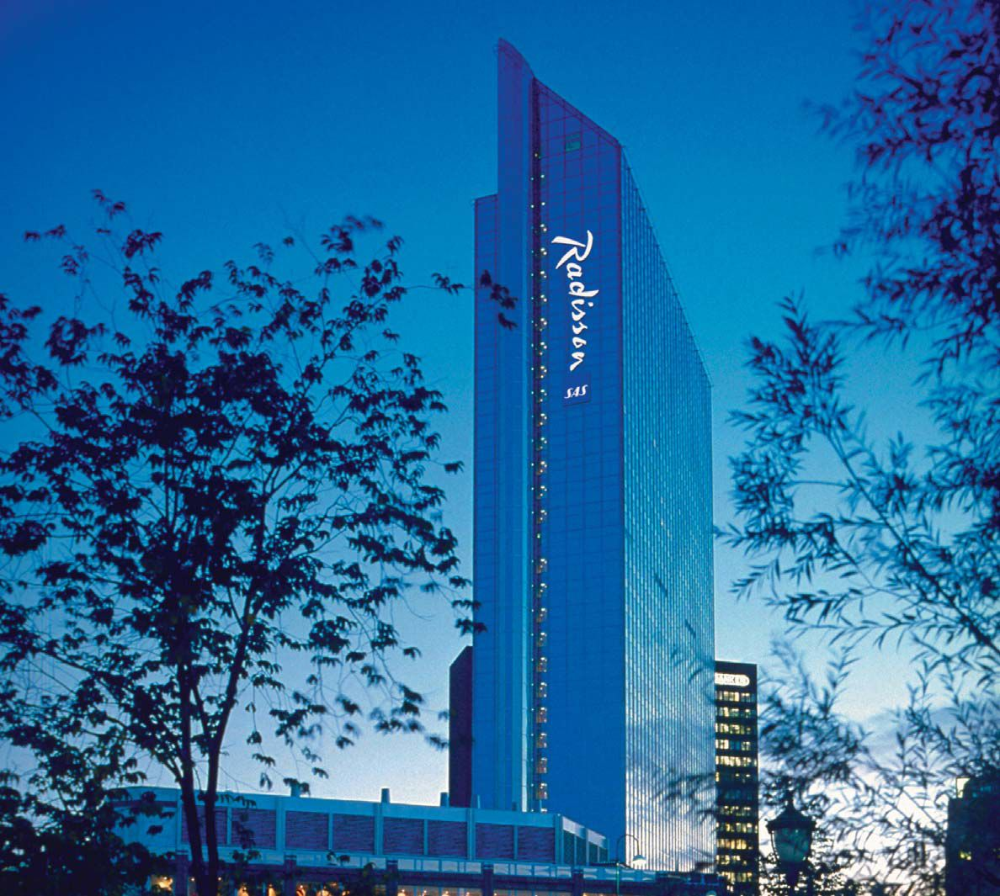
Bilde av Oslo Plaza
Adresse: Sonia Henies plass 3 Oslo - Oslo Plaza raddisonSto ferdig i 1989 etter 2 år med bygging. Arkitekt selskapet som designet dette er white arkitekter. I tillegg med sine 117 meter over bakken er dette Norges nest høyestebygning. Hotellet er bestående av 37 etasjer og 676 rom.
close